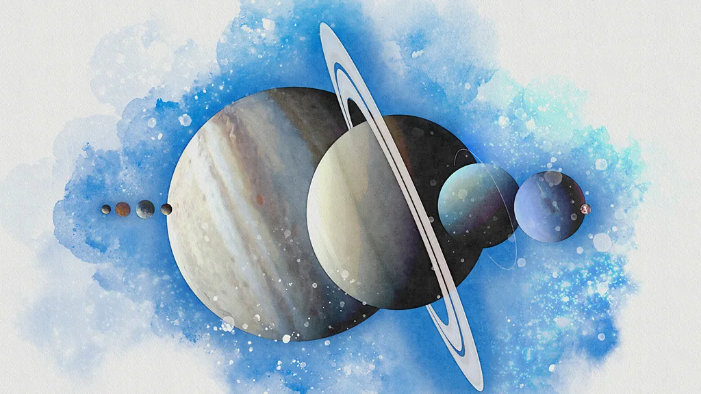
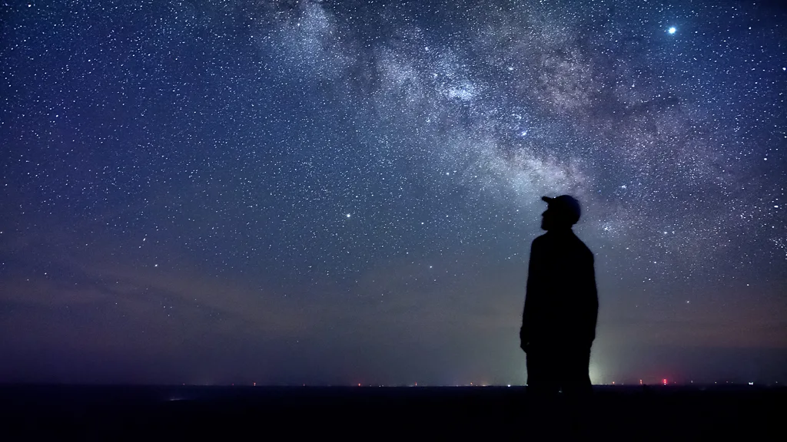
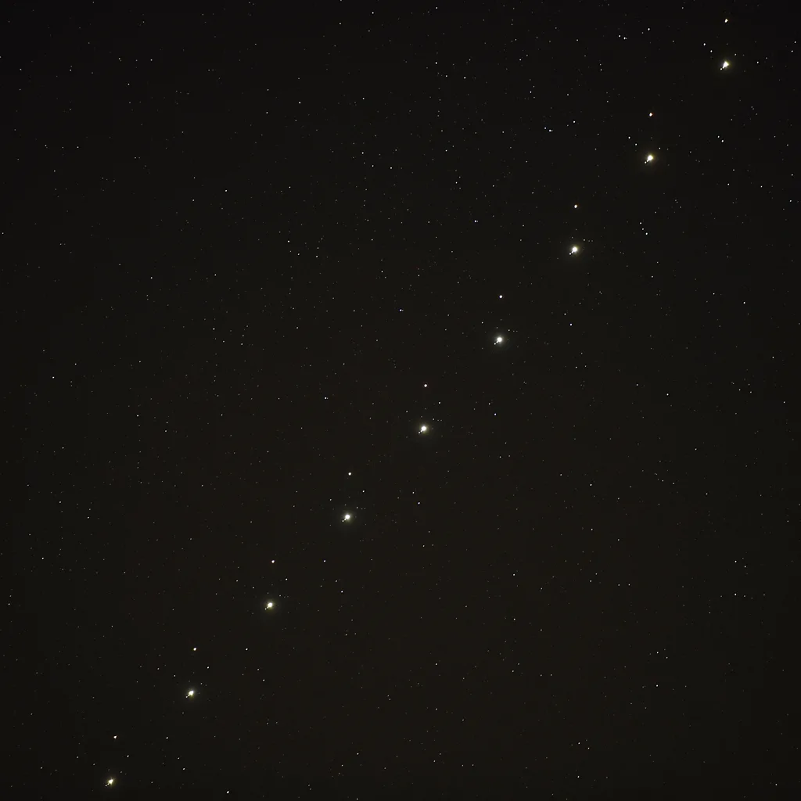
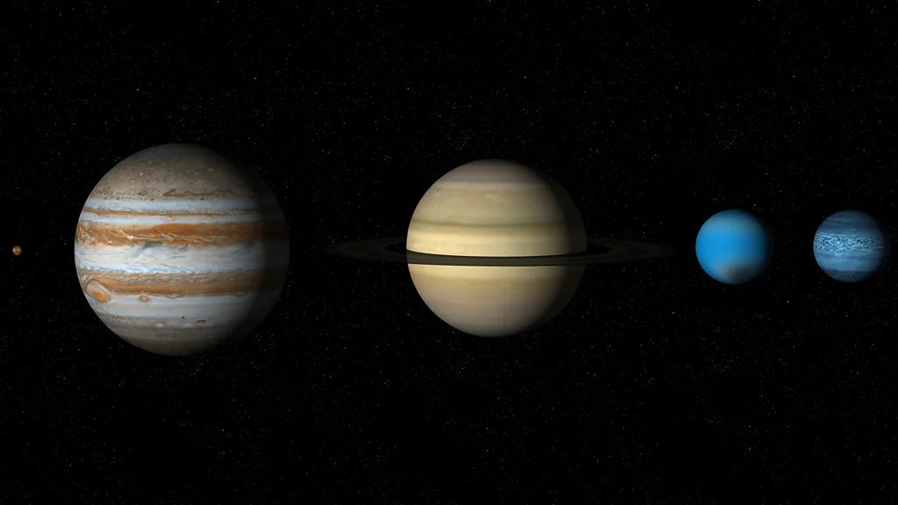

Seven planets are lining up in the sky next month. This is what it really means
Jonathan O'Callaghan
(Credit: Getty Images)
Stargazers will be treated to a rare alignment of seven planets on 28 February when Mercury joins six other planets that are already visible in the night sky. Here's why it matters to scientists.
Peer up at the sky on a clear night this January and February and you could be in for a treat. Six planets – Venus, Mars, Jupiter, Saturn, Uranus and Neptune – are currently visible in the night sky. During just one night in late February, they will be joined by Mercury, a rare seven-planet alignment visible in the sky.
But such events are not just a spectacle for stargazers – they can also have a real impact on our Solar System and offer the potential to gain new insights into our place within it.
The eight major planets of our Solar System orbit the Sun in the same flat plane, and all at different speeds. Mercury, the closest planet to the Sun, completes an orbit – a year for the planet – in 88 days. Earth's year, of course, is 365 days, while at the upper end, Neptune takes a whopping 60,190 days, or about 165 Earth years, to complete a single revolution of our star.
The different speeds of the planets mean that, on occasion, several of them can be roughly lined up on the same side of the Sun. From Earth, if the orbits line up just right, we can see multiple planets in our night sky at the same time. In rare events, all the planets will line up such that they all appear in our night sky together along the ecliptic, the path traced by the Sun.
Mercury, Venus, Mars, Jupiter and Saturn are all bright enough to be visible to the naked eye, while Uranus and Neptune require binoculars or a telescope to spot.
In January and February, we can witness this event taking place. The planets are not exactly lined up, so they will appear in an arc across the sky due to their orbital plane in the Solar System. During clear nights in January and February, all of the planets except Mercury will be visible – an event sometimes called a planetary parade. On 28 February, though – weather permitting – all seven planets will be visible, a great spectacle for observers on the ground.
"There is something special about looking at the planets with your own eyes," says Jenifer Millard, a science communicator and astronomer at Fifth Star Labs in the UK. "Yes, you can go on Google and get a more spectacular view of all these planets. But when you're looking at these objects, these are photons that have travelled millions or billions of miles through space to hit your retinas."
Stargazers will be able to enjoy the sight of the planets on a clear night through January and February, culminating with seven visible all at once (Credit: Getty Images)
While fascinating to observe, do such alignments have any impact here on Earth? Or might they have a use for increasing our understanding of our Solar System and beyond?
In fact, says Millard, "it's just happenstance that they happen to be in this position of their orbits". And while there have been suggestions from some scientists that planetary alignments might cause impacts on Earth, the scientific basis for most of these claims is weak or non-existent.
In 2019, however, researchers suggested that planetary alignments could have an impact> on solar activity. One of the main outstanding questions about the Sun is what drives its 11-year cycle between periods of peak activity, known as solar maximum (which we are currently in), and periods of weakest activity, solar minimum. Frank Stefani, a physicist at Helmholtz-Zentrum, research centre in Dresden-Rossendorf in Germany, suggested the combined tidal forces of Venus, Earth and Jupiter could be the answer.
While the tidal pull of each planet on the Sun is extremely small, Stefani says that when two or more of the planets line up with the Sun – known as a syzygy – they might combine to cause small rotations inside the star, called Rossby waves, which can drive weather events.
"On Earth, Rossby waves cause cyclones and anticyclones," says Stefani. "We have the same Rossby waves in the Sun." Stefani's calculations showed that the alignments of Venus, Earth and Jupiter would cause a periodicity to solar activity of 11.07 years, almost exactly matching the length of solar cycles that we see.
Not everyone is so sure about the idea, with some noting that solar activity can already be explained by processes within the Sun alone. "The observational evidence suggests that the planets directly causing the solar cycle just doesn't happen," says Robert Cameron, a solar scientist at the Max Planck Institute for Solar System research in Germany, who published a paper on the subject in 2022. "There's no evidence of any synchronisation."
But there are other, far less contentious, quirks of planetary alignments which certainly do have an impact on us: their usefulness for scientific observations, particularly in terms of exploring the Solar System.
Reaching the outer planets with a spacecraft is difficult because these worlds are so far away, billions of miles, and would take decades to reach. However, using the gravitational pull of a well-placed planet, such as Jupiter, to slingshot a spacecraft outwards can reduce the travel time dramatically, something no spacecraft has done better than Nasa's Voyager vehicles.
In 1966, a Nasa scientist called Gary Flandro calculated that there would be an alignment of the four outermost planets – Jupiter, Saturn, Uranus and Neptune – in 1977 that would enable all four to be visited within a span of just 12 years, compared to 30 years if they were not aligned. This fortuitous alignment, which occurs only once every 175 years, led to Nasa launching the twin Voyager 1 and 2 spacecraft in 1977 on a "Grand Tour" of the outer Solar System.
Voyager 1 flew past Jupiter in 1979 and Saturn in 1980, eschewing Uranus and Neptune because scientists wanted to fly past Titan, Saturn's fascinating moon, and could not do so without ruining the slingshot effect.
But Voyager 2 used the alignment to visit all four planets, becoming the only spacecraft in history to visit Uranus and Neptune, in 1986 and 1989 respectively.
"That worked out fantastic," says Fran Bagenal, an astrophysicist at the University of Colorado, Boulder in the US and a member of the Voyager science team. "If Voyager 2 had left in 1980, it would have taken until 2010 to get to Neptune. I don't think it would have won support. Who's going to fund such a thing?"
In 2024 it was possible to see Mars and Jupiter in conjunction with the naked eye but Venus, Saturn, Uranus and Neptune will also be visible in January 2025 (Credit: Getty Images)
It is not just within our Solar System that planet alignments are useful. Astronomers use alignments to probe many different aspects of the Universe, and none more so than in the discovery and study of exoplanets, worlds that orbit stars other than the Sun.
The dominant way of finding such worlds is known as the transit method: when an exoplanet passes in front of a star from our point of view it dims the star's light, allowing its size and orbit to be discerned.
Thanks to this method, we have discovered many planets in orbit around certain stars. Trappist-1, a red dwarf star located 40 light-years from Earth, has seven Earth-sized planets that all transit the star from our point of view. The planets in that system are actually in resonance with each other – meaning the outermost planet completes two orbits for every three orbits of the next planet inwards, then four, six, and so on. This means there are periods where multiple planets in the system align in a straight line, something that doesn't happen in our Solar System.
Using transits, we can study the existence of atmospheres on planets like these. "If a planet with an atmosphere goes in front of a star, that alignment means the starlight goes through the planet, and the molecules and atoms in the planet's atmosphere absorb light at certain wavelengths," says Jessie Christiansen, an astronomer at the Nasa Exoplanet Science Institute at the California Institute of Technology.
This allows different gases such as carbon dioxide and oxygen to be identified. "The vast majority of our atmospheric composition analysis is due to alignments," she says.
Much grander alignments can let us probe the distant Universe, namely the alignments of galaxies. Observing galaxies in the very early universe is difficult because they are so faint and far away. However, if a large galaxy or cluster of galaxies passes between our line of sight with a much more distant early galaxy, its large gravitational pull can magnify the light of the more distant object, allowing us to observe and study it, a process called gravitational lensing.
"These are huge alignments across the scale of the universe," says Christiansen. They are used by telescopes such as the James Webb Space Telescope to observe remote stars and galaxies such as Earendel, the most distant known star from Earth. The light viewed by the telescope from the star came from the first billion years of the 13.7-billion-year-history of the Universe and was visible only because of gravitational lensing.
The different orbital speeds of the planets in our Solar System means several of them can occasionally line up in the same part of the sky at the same time (Credit: Getty Images)
And then there are some more novel uses of alignments, such as probing the existence of extraterrestrial life, in solar systems where the exoplanets pass in front of each other from our point of view.
In 2024, graduate student Nick Tusay at Pennsylvania State University in the US used these alignments to look for any spillover communications being sent between worlds of the Trappist-1 system, such as how on Earth we send signals to planets like Mars in our solar system to talk to rovers and spacecraft. "Any time that two planets are aligned might be interesting," says Tusay.
On this occasion the searches turned up short. But an alien civilisation looking towards our own Solar System might use similar alignments for the same purpose. While the planetary parade this month depends on your point of view – any two planets in our system can be aligned if you are positioned at the right angle – it's not impossible to imagine someone else on the other end, watching on.
"Perhaps another alien civilisation might see this as an opportunity to conduct their own investigations," says Tusay.